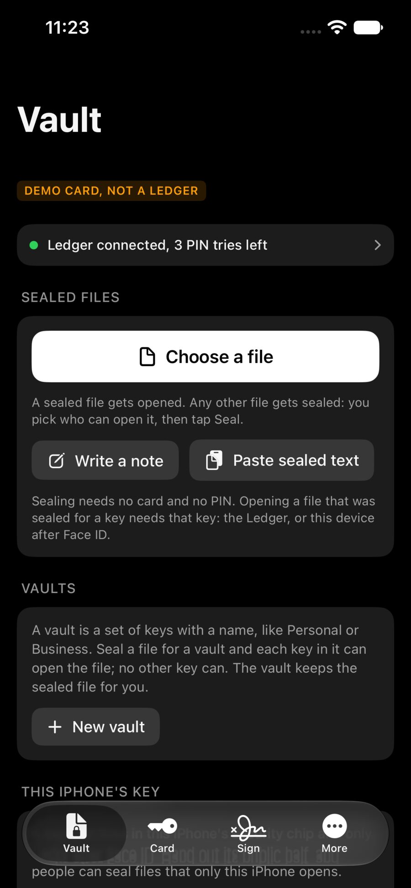
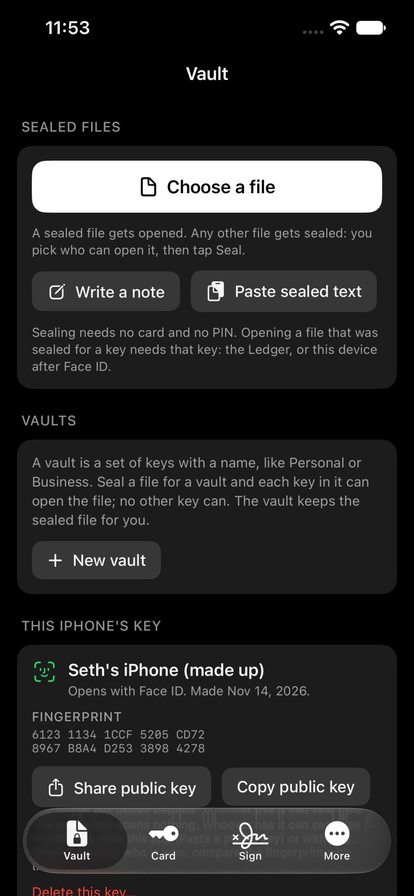
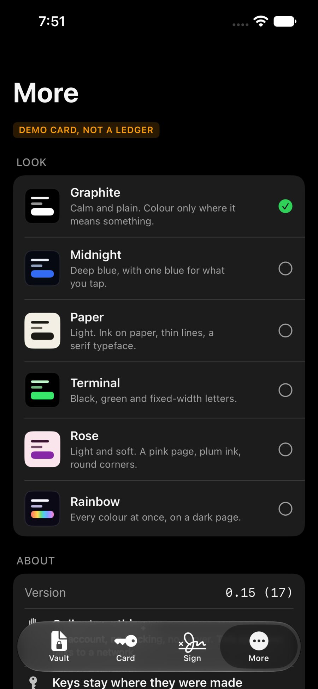
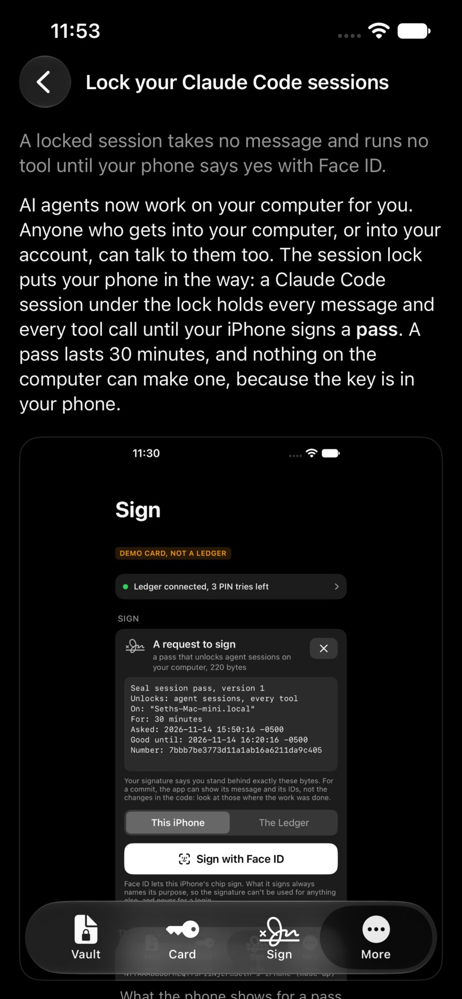

01 / 09Seal guide
Start here
Seal is the key your computer doesn’t have. Two minutes to your first key.
Seal keeps a key in your iPhone’s security chip. It never leaves the chip, and it only works after Face ID. With it you can seal files so only your keys open them, sign things so others know they came from you, and say yes to your AI agents from your phone.

The four pages
- Vault: seal and open files, your vaults, and this iPhone’s key.
- Card: a hardware key such as a Ledger, when one is plugged in. You don’t need one.
- Sign: sign a request from your computer, or a message you type.
- More: the look of the app, and what it does and doesn’t do.
Make this iPhone’s key
- 1
Open the Vault page and scroll to This iPhone’s key.
- 2
Tap
Make this iPhone's key. - 3
Give it a name you’ll recognise, like “Alex’s iPhone”.
- 4
Face ID asks once. The key is made inside the chip.

The same key has two parts: one opens files sealed for this iPhone, the other signs. The Sign page shows the signing part as This iPhone’s signing key. It is not a second key.
The key belongs to this iPhone alone. If Face ID is set up again, or the phone is lost or replaced, the key is gone. For anything you must keep, also seal it for a second key: a backup key, or a Ledger.
Pick a look
Seal comes in six looks: Graphite, Midnight, Paper, Terminal, Rose and Rainbow. Open More, then Look, and tap one.

What Seal never does
- It never talks to the internet. There is no account and nothing is collected.
- It never holds a private key in a file: yours stays in the chip, a Ledger’s stays in the Ledger.
- It never writes an opened file to the disk. Opened files live in memory, and closing the screen lets them go.
These guides, in the app
Every guide here is also in Seal: More, then Guides. They work offline, like the rest of the app.
